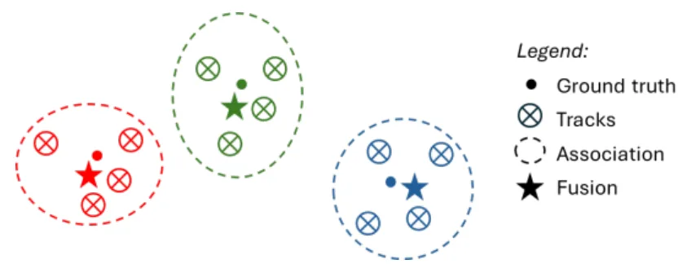
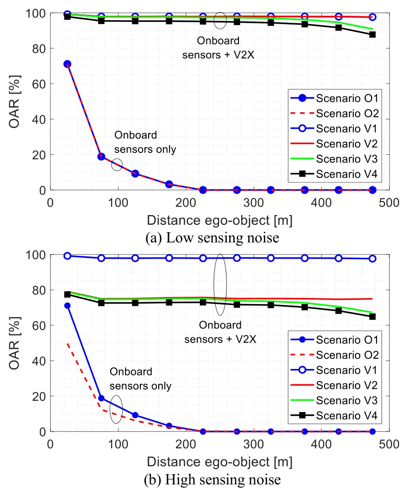
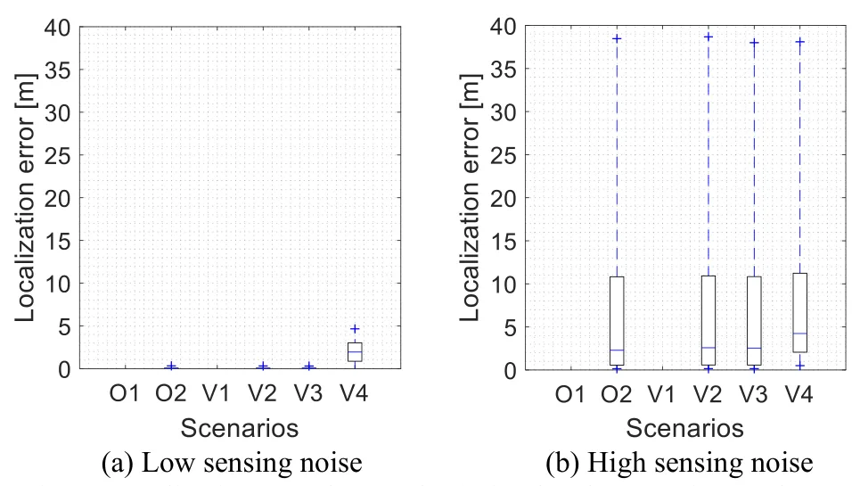
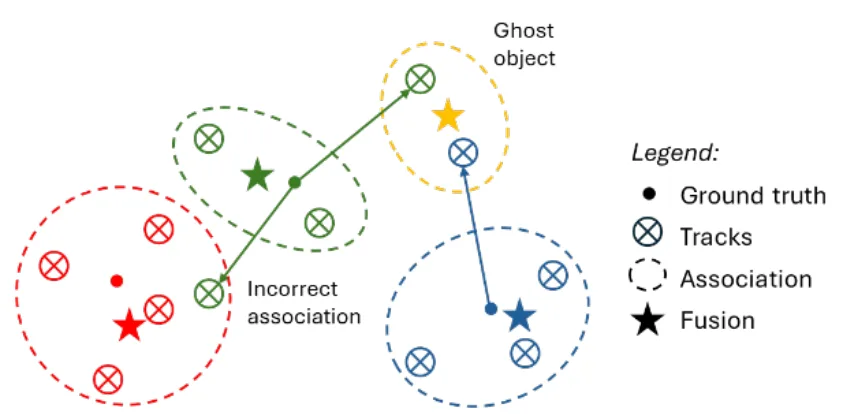
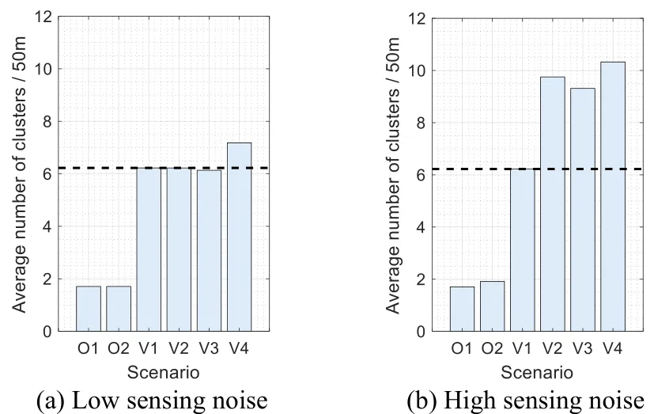
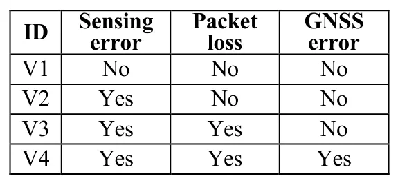
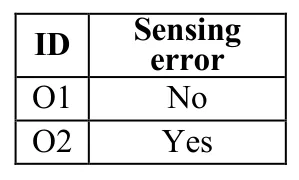

车载传感器与 V2X 数据融合如何改善（或不能改善）网联自动驾驶协同感知How the Fusion of Onboard Sensors and V2X Data can Improve (or not) the Cooperative Perception of Connected Automated Vehicles
直接涉及 GNSS inaccuracies 和 V2X 感知融合误差传播，但不是定位/SLAM 后端论文；适合作为车路协同感知鲁棒融合线索低优先级跟踪。
一句话工作总结
评估 GNSS 误差和 V2X 丢包如何影响协同感知融合，并指出 ghost vehicle 风险。
摘要
本文分析网联自动驾驶车辆中车载传感器与 V2X 数据融合对协同感知的影响，重点考察传感测量误差、V2X packet loss 和 GNSS inaccuracies 对融合质量的作用。结果显示协同感知可扩大感知范围并提升感知水平，但 V2X 数据中的误差也可能在融合过程中生成 ghost vehicles，因此需要专门机制避免 V2X 数据引入额外错误。
Automated vehicles rely on onboard sensors to perceive their surroundings and navigate autonomously. However, sensor performance may degrade under adverse weather conditions or when line-of-sight is obstructed. Cooperative perception (or collective perception) is expected to mitigate these limitations by enabling Connected and Automated Vehicles (CAVs) to share sensor data and collaboratively enhance situational awareness. Several studies have analyzed the potential of cooperative perception, yet the fusion of V2X data with information from onboard sensors has received limited focus. V2X data may contain errors that affect the quality of the fused data, and hence the effectiveness of cooperative perception. This study analyzes the impact of sensing measurement errors, V2X packet losses, and GNSS inaccuracies on the effectiveness of cooperative perception. The results highlight the potential of cooperative perception to enhance perception levels and range compared to using onboard sensors alone. However, they also identify key challenges related to the generation of ghost vehicles during the fusion process, which must be addressed to prevent V2X data from introducing additional errors when fused with onboard sensor data.
中文解读摘录
- 链接：https://arxiv.org/abs/2607.07114 ｜ PDF：https://arxiv.org/pdf/2607.07114
- 中文题名：车载传感器与 V2X 数据融合如何改善（或不能改善）网联自动驾驶协同感知
- 关键信息：分析 CAV 协同感知中车载传感器与 V2X 数据融合效果，重点考察 sensing measurement errors、V2X packet losses 和 GNSS inaccuracies 对融合结果的影响，并指出 ghost vehicles 是关键风险。
- 为什么值得看：这不是 SLAM 后端论文，但直接触及 GNSS 误差和通信丢包进入感知融合后的负面效应，对车路协同定位/感知系统的误差预算和鲁棒融合策略有参考价值。
- 需要核查：传感器误差和 GNSS 不准的仿真模型、ghost vehicle 的生成机制、与 CP/collective perception 标准消息的对应关系，以及是否可迁移到因子图/多源跟踪融合。
图表/页面预览

{kind=link}

{kind=link}

{kind=link}

{kind=link}

{kind=link}

{kind=link}

{kind=link}
